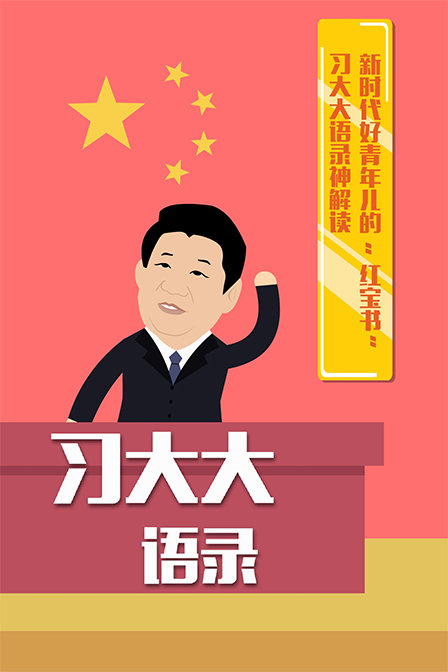

(一)“人民对美好生活的向往，就是我们的奋斗目标”
“我们的人民热爱生活，期盼有更好的教育、更稳定的工作、更满意的收入、更可靠的社会保障、更高水平的医疗卫生服务、更舒适的居住条件、更优美的环境，期盼孩子们能成长得更好、工作得更好、生活得更好。人民对美好生活的向往，就是我们的奋斗目标。”
(二)“打铁还需自身硬”ww
“打铁还需自身硬。我们的责任，就是同全党同志一道，坚持党要管党、从严治党，切实解决自身存在的突出问题，切实改进工作作风，密切联系群众，使我们党始终成为中国特色社会主义事业的坚强领导核心。”
(三)“始终与人民心心相印”
“我们一定要始终与人民心心相印、与人民同甘共苦、与人民团结奋斗，夙夜在公，勤勉工作，努力向历史、向人民交出一份合格的答卷。”
(四)“中国梦”
“每个人都有理想和追求，都有自己的梦想。现在，大家都在讨论中国梦，我以为，实现中华民族伟大复兴，就是中华民族近代以来最伟大的梦想。”
“中国梦归根到底是人民的梦，必须紧紧依靠人民来实现，必须不断为人民造福。”
(五)“空谈误国，实干兴邦”
“空谈误国，实干兴邦。我们这一代共产党人一定要承前启后、继往开来，把我们的党建设好，团结全体中华儿女把我们国家建设好，把我们民族发展好，继续朝着中华民族伟大复兴的目标奋勇前进。”
(六)“改革不停顿、开放不止步”
“全党全国各族人民要坚定不移走改革开放的强国之路，更加注重改革的系统性、整体性、协同性，做到改革不停顿、开放不止步，为全面建成小康社会、加快推进社会主义现代化而团结奋斗。”
(七)“强军梦”
“实现中华民族伟大复兴，是中华民族近代以来最伟大的梦想。可以说，这个梦想是强国梦，对军队来说，也是强军梦。我们要实现中华民族伟大复兴，必须坚持富国和强军相统一，努力建设巩固国防和强大军队。”
(八)“把群众的安危冷暖时刻放在心上”
“对困难群众，我们要格外关注、格外关爱、格外关心，千方百计帮助他们排忧解难，把群众的安危冷暖时刻放在心上，把党和政府的温暖送到千家万户。”
(九)“踏石留印、抓铁有痕”
“要以踏石留印、抓铁有痕的劲头抓下去，善始善终、善做善成，防止虎头蛇尾，让全党全体人民来监督，让人民群众不断看到实实在在的成效和变化。”
(十)“老虎”、“苍蝇”一起打
“从严治党，惩治这一手决不能放松。要坚持‘老虎’、‘苍蝇’一起打，既坚决查处领导干部违纪违法案件，又切实解决发生在群众身边的不正之风和****问题。要坚持党纪国法面前没有例外，不管涉及到谁，都要一查到底，决不姑息。”